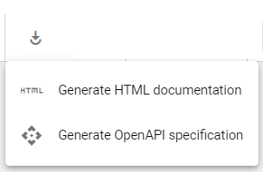

Aspect Model Editor UI overview
This section gives a brief overview of the UI and its features.

The numbers in the image above indicate the following UI elements of the Aspect Model Editor:
Toolbar
| Icon | Name | Action |
|---|---|---|
|
Load/Create |
Start with a new Aspect Model or import an existing model or namespace. |
|
Save |
Download the model as a TTL file or save it in the local namespaces file structure. |
|
Add file to Namespace. |
Assign the file automatically to the corresponding namespace. |
|
Edit highlighted element |
Open the Edit dialog of the selected element (alternative: double-click an element inside the model). |
|
Delete |
Delete selected element(s). |
|
Collapse all/Expand all |
Expands/Collapses elements. |
|
Format |
Automatically format the Aspect Model. |
|
Connect |
Connect two selected elements. |
|
Validate |
Validate the Aspect Model. |
 |
Generate HTML or OpenAPI specification. |
For more information, see Generate other artifacts out of your Aspect Model. |
|
Generate JSON/JSON schema |
Download a JSON schema or a JSON sample generated based on your model. A dropdown menu will open to offer both of these options. |
|
Show map/Hide map |
Show or hide the map. |
|
Show navigation/Hide navigation |
Show or hide the navigation. |
Use the search field to search for an element by name. |
||
|
Open settings. Allows for defining the general configuration of the Aspect Model Editor, language settings, and namespace settings. To access the Settings dialog, click the Settings icon For more information, see Settings. |
|
|
Open notifications. Shows the validation results for your Aspect Model. Further, you can find there info messages (e.g., Aspect Model was loaded) and warning messages (e.g., if elements cannot be connected to each other). To access the Notifications dialog, click the Notifications icon For more information, see Validation and notifications. |
|
|
Help |
Open documentation. |
Workspace sidebar
The Workspace sidebar – see screenshot below – allows you to access namespaces (1) and to drag and drop elements to the graph area canvas (2).
Expand the Workspace sidebar to view the description of each element.
To add an element to your model drag and drop it on the graph area canvas, edit its details, and connect it with the rest of the graph.
For more information, see Edit models.
Map
With the map, you can easily navigate your Aspect Model in the graph area canvas.
To toggle its visibility, click the Show/Hide map icon  in the toolbar.
in the toolbar.
For more information, see Navigate models.
Edit dialog
Edit the attributes of a selected element of your Aspect Model with the Edit dialog.
To access the details of an element in the Edit dialog, either double-click the element or select the element and click the Edit icon  on the toolbar.
on the toolbar.
For more information, see Edit elements.
Add icon
Add the next logical element with the Add icon  .
.
For example, the Add icon at the top of a Characteristic element creates a Trait connected to: * The parent Property * An existing Characteristic * A new Constraint
For more information, see Use the Add icon.
Navigation
Optimize your current view of the model with the navigation:
-
Fit the complete model on the current view
-
Reset zoom level to 100%
-
Zoom in
-
Zoom out

For more information, see Navigate models.